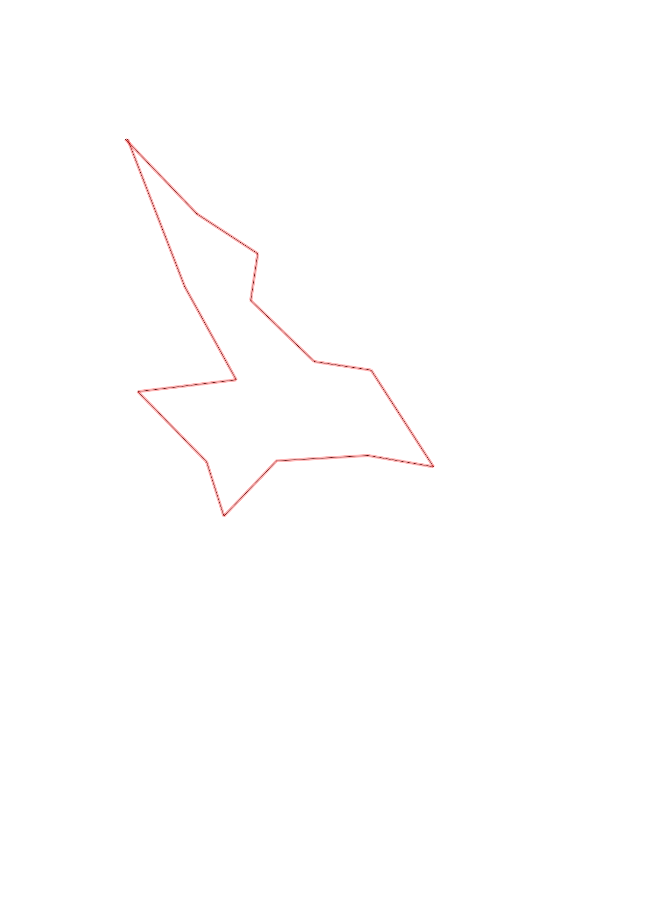
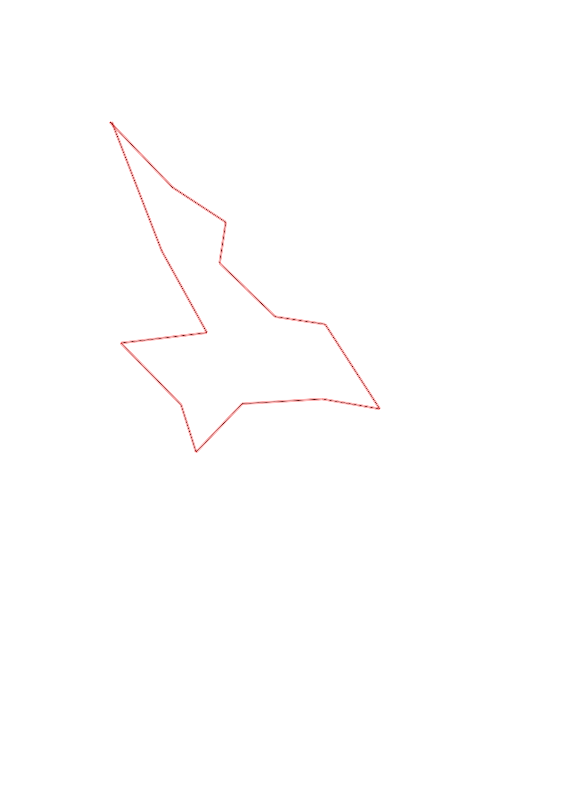

| Control |
Points |
Time Punched |
Distance |
Your Time |
Pace |
Place |
Fastest Time |
Median Time |
% Behind Fastest |
| 42 |
40 |
|
0.48 |
0:02:13 |
04:37 |
2 / 7 |
0:02:11 |
0:02:17 |
1% |
| 95 |
90 |
|
0.34 |
0:04:39 |
13:40 |
3 / 6 |
0:02:25 |
0:04:50 |
92% |
| 43 |
40 |
|
0.22 |
0:01:33 |
07:02 |
2 / 6 |
0:01:27 |
0:01:53 |
6% |
| 35 |
30 |
|
0.41 |
0:03:05 |
07:31 |
1 / 1 |
0:03:05 |
0:03:05 |
0% |
| 104 |
100 |
|
0.27 |
0:04:14 |
15:40 |
1 / 2 |
0:04:14 |
0:05:00 |
0% |
| 85 |
80 |
|
0.54 |
0:04:08 |
07:39 |
1 / 2 |
0:04:08 |
0:04:16 |
0% |
| 55 |
50 |
|
0.31 |
0:03:13 |
10:22 |
1 / 2 |
0:03:13 |
0:03:23 |
0% |
| 103 |
100 |
|
0.43 |
0:04:57 |
11:30 |
1 / 1 |
0:04:57 |
0:04:57 |
0% |
| 92 |
90 |
|
0.36 |
0:07:29 |
20:47 |
2 / 2 |
0:03:52 |
0:05:40 |
93% |
| 31 |
30 |
|
0.26 |
0:02:14 |
08:35 |
3 / 3 |
0:01:37 |
0:01:40 |
38% |
| 56 |
50 |
|
0.46 |
0:07:49 |
16:59 |
1 / 1 |
0:07:49 |
0:07:49 |
0% |
| 75 |
70 |
|
0.46 |
0:04:40 |
10:08 |
2 / 2 |
0:04:37 |
0:04:38 |
1% |
| 36 |
30 |
|
0.5 |
0:03:02 |
06:04 |
1 / 2 |
0:03:02 |
0:03:46 |
0% |
| Finish |
0 |
|
0.73 |
0:05:09 |
07:03 |
1 / 1 |
0:05:09 |
0:05:09 |
0% |
Total Distance Covered: 5.77km
Points Scored: 800
Late Penalty: 0
Final Score: 800
Total Time: 0hours 58minutes 25seconds
Efficiency: 138.65 points/km
 
